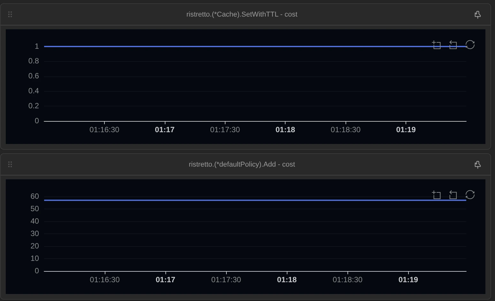
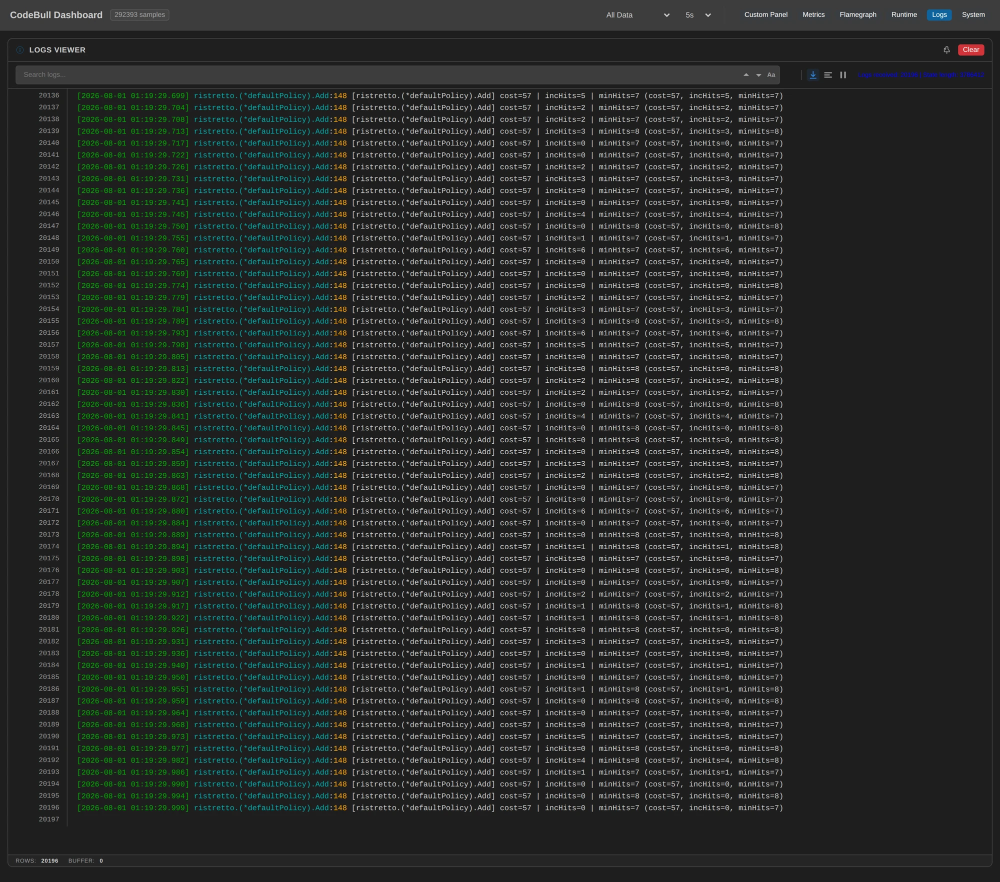
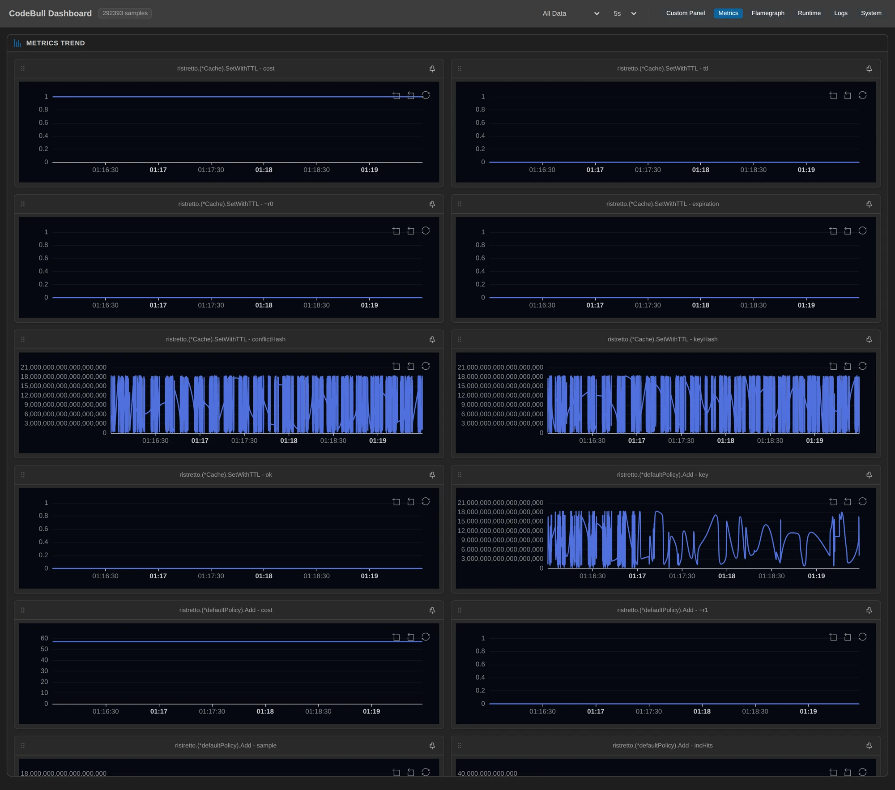

十八分鐘，那支程式對快取寫了 110,572 次，每一次都拿到 true。面板上的數字是：其中 95,879 次在另一個 goroutine 裡被當場丟掉，連寫都沒寫進去。
這篇聊的不是工具，是「盯著執行中的東西看」這件事本身——因為這個現象在原始碼裡是讀得出來的，我讀過，我甚至知道它叫 admission policy。但我沒有真的看過那個比例，也沒看過它做決定時到底在比什麼。
先決定要站在哪裡看
Ristretto 的黑盒性質跟 ORM 不太一樣。ORM 是「你寫的一行變成什麼 SQL」，你至少知道最後有東西送出去。快取是「你寫的一行到底有沒有算數」——而它的 API 從一開始就沒打算告訴你。
Cache.Set 的簽章是 func (c *Cache[K, V]) Set(key K, value V, cost int64) bool。回一個 bool。文件寫得很誠實：這個 bool 的意思是「有沒有被放進緩衝區」，不是「有沒有被存起來」。真正的收留與否，發生在另一個 goroutine 從緩衝區撈出來之後。
所以觀測的第一個決定是：站在哪一層看。
站在 Set 裡面，你只看得到 true——那是門口的收件章，跟後面發生什麼事無關。站在真正做決定的那一層（defaultPolicy.Add），你看得到收或不收，但看不到是誰、什麼時候、為什麼要寫這一筆。
我最後決定兩層一起掛，然後讓兩邊的數字自己對帳：
- 入口：
cache.go:357，Set的return true那一行——「呼叫端被告知 true」的次數。 - 入口的另外兩個出口：
cache.go:352（這個 key 已經在 store 裡，改判成 update）與cache.go:365（緩衝區滿了，回false）。這兩條路我也各放一個點，因為我需要知道它們沒有發生，才敢說入口只有一種形狀。 - 決定層的四個出口：
policy.go:116（有空位，直接收）、policy.go:166（踢掉別人之後收）、policy.go:107（政策裡已經有這個 key）、policy.go:148（拒收）。 - 拒收那一個點不只放計數，還把當下的三個變數抓出來：
cost={cost} incHits={incHits} minHits={minHits}。
minHits 這個欄位，等一下會變成整篇的主角。
掛的時候踩到一個坑值得先講：這幾個函式的接收者是 *Cache[K, V] 和 *defaultPolicy[V]，泛型型別的方法在編譯出來的 binary 裡根本不叫這個名字。Go 做 GC shape stenciling，binary 裡是 (*Cache[go.shape.string,go.shape.string]).SetWithTTL，而 /v2 這個主版本路徑元素還會卡在套件名跟接收者中間。從原始碼推出來的名字和 binary 裡的名字，中間隔了兩層翻譯——我在真的看到第一個數字之前，先花了一小時在跟名字打架。這件事跟 Ristretto 完全無關，但它是這一輪最真實的一段。
負載我刻意讓它分成兩段：前 180 輪，key 空間 2,000（容量的 2 倍）；第 181 輪起，key 空間換成 50,000（容量的 50 倍）。呼叫端完全不知道有這回事——同一支程式、同一行 Set、同一個 process，中間沒有重啟、沒有換設定。
前十三分鐘看到的：一次 Set 的素顏
觀測窗口是 2026-07-31 17:04:06.463Z 到 17:22:04.266Z，十七分五十八秒，245 輪、每輪 500 次操作。
先看相位 A（前 180 輪，key 空間 2,000）。我寫的那行 Go 只有一句：
if cache.Set(key, "value-"+key, 1) {
t.setTrue++
}面板上真正跑的是這些：
| 我寫的 Go | 面板上真正跑的 | 收斂點 | 相位 A 次數 |
|---|---|---|---|
cache.Set(key, v, 1) | Set 回 true（丟進 setBuf） | cache.go:357 | 82,728 |
| 〃 | key 已在 store 裡，改判成 update | cache.go:352 | 0 |
| 〃 | setBuf 滿了，回 false | cache.go:365 | 0 |
| 〃 | 政策裡已經有這個 key，回 false | policy.go:107 | 21 |
| 〃 | 有空位，直接收下 | policy.go:116 | 17 |
| 〃 | 踢掉別人之後收下 | policy.go:166 | 14,765 |
| 〃 | 拒收 | policy.go:148 | 67,926 |
這張表有三件我「知道，但沒真的看過」的事。
入口只有一種形狀。 cache.go:352 和 :365 兩個點，十八分鐘一次都沒響。所以這一輪裡 Set 從來沒走過「其實是 update」那條路，緩衝區也從來沒滿過——入口的 82,728 個 true 全部是同一個意思：東西進了佇列。這是後面所有推論的地基，而它是靠兩個從頭到尾都是 0 的點撐起來的。
帳算得起來。 決定層四個出口加起來是 21 + 17 + 14,765 + 67,926 = 82,729，入口是 82,728。差一筆，那是我按下快照那一瞬間還在佇列裡飛的那一個。十八分鐘、八萬多次，只差一筆。
我傳的 cost 不是政策秤的 cost。 我每次都傳 1。但拒收那個點抓出來的 cost，95,821 列裡每一列都是 57。Ristretto 在把 item 交給政策之前，會偷偷加上 itemSize——也就是內部 storeItem 結構本身的大小（在 amd64 上是 56 bytes）。所以我以為我在說「這東西值 1 個單位」，政策聽到的是「57」。
而這個數字可以當場驗算：容量 1,000 除以 57 是 17.5，所以在踢人之前，這個快取只塞得下 17 個我的 item。「有空位，直接收下」那個點（policy.go:116）整整十八分鐘的命中數，剛好就是 17。一個我沒傳過的常數，和一個我沒預期的計數，在面板上對上了。

cost 平平地壓在 1（那是我傳進去的），政策那格平平地壓在 57（那是它真正秤的）。中間差的 56 bytes 是 storeItem 自己。 打開線上面板 →到這裡都還算有趣但不驚訝。真正讓我坐直的是拒收那個點抓出來的內容。
incHits=3, minHits=16：一場它沒告訴你的比賽
拒收那一行的模板，逐字抄自面板：
cost=57 | incHits=3 | minHits=16
cost=57 | incHits=2 | minHits=16
cost=57 | incHits=0 | minHits=16incHits 是我這次要寫的這個 key 的估計熱度。minHits 是政策從現住戶裡隨機抽樣之後，抽到的最冷的那一個的熱度。程式碼是這樣的：
if incHits < minHits {
p.metrics.add(rejectSets, key, 1)
return victims, false
}也就是說，每一次 Set，你的資料都在跟已經住在裡面的東西比一場。輸了就當場丟掉，而呼叫端拿到的是 true。
95,821 列裡，incHits < minHits 成立的比例是 100%——一列例外都沒有。這不意外（那是這一行的條件），但它證明了我抓到的變數就是那個判斷用的變數，不是別的東西。
真正的發現在 minHits 的分布上。相位 A 的 67,911 次拒收裡，有 57,881 次（85.2%）的 minHits 剛好是 16。
16 這個數字不是巧合。Ristretto 的頻率估計器是一個 4-bit counter 的 Count-Min sketch（sketch.go 裡每個 counter 都 & 0x0f，上限 15），再加上一個 doorkeeper bloom filter 命中時 +1。16 就是這把尺能表示的最大值。
所以那 57,881 次拒收，真正的意思不是「你的資料不夠熱」，而是——
「被抽到的那個現住戶已經頂到計數器的天花板，而它到底是被摸過 16 次還是 16,000 次，這把尺量不出來。」
相位 A 的平均 incHits 是 3.699，平均 minHits 是 15.127。一個平均 3.7 分的挑戰者，對上一群平均 15.1 分、其中八成五已經滿分的現住戶。這場比賽不是難打，是尺不夠長。

cost 都是 57；這一段截在相位 B（本地時間 01:19，即 17:19Z），所以 minHits 是 7 或 8——不是相位 A 那個頂到天花板的 16。同一個點、同一支程式，中間只換了 key 空間。 打開線上面板 →第 181 輪：我把 key 空間放大 25 倍，呼叫端一個字都沒察覺
第 181 輪，程式把 key 空間從 2,000 換成 50,000。沒有重啟、沒有改設定、Set 那一行一個字都沒動。
呼叫端看到的：還是 100% 的 true。相位 B 的 28,086 次 Set，28,086 次 true。
面板上看到的：
| 收斂點 | 相位 A | 相位 B |
|---|---|---|
Set 回 true | 82,728 | 28,086 |
| 有空位，直接收下 | 17 | 0 |
| 踢掉別人之後收下 | 14,765 | 133 |
| 拒收 | 67,926 | 27,953 |
| 收留率 | 17.87% | 0.47% |
收留率從 17.87% 掉到 0.47%，中間唯一改變的是我要寫的 key 有幾種。 一個回傳值完全一樣的 API，底下的行為換了一個數量級，而呼叫端手上那個 bool 從頭到尾長得一模一樣。
minHits 的分布也整個翻過來了。相位 B 的 27,910 次拒收裡，minHits 等於 16 的次數是 0：
minHits | 5 | 6 | 7 | 8 | 9 | 10 | 11 | 12 | 13 | 14 | 16 |
|---|---|---|---|---|---|---|---|---|---|---|---|
| 次數 | 731 | 3,280 | 3,137 | 4,209 | 4,047 | 4,592 | 3,952 | 2,399 | 1,512 | 51 | 0 |
平均 minHits 從 15.127 掉到 9.098，平均 incHits 從 3.699 掉到 1.375。現住戶不再滿分了——key 空間放大 25 倍之後，同一份 sketch 要記的東西多了 25 倍，每個 key 分到的計數自然稀釋。
但收留率反而更低。因為挑戰者掉得更兇：從平均 3.7 掉到 1.4。兩邊都變冷了，而挑戰者冷得比較快。
誠實段：這一輪有三件事我沒做好
第一，那個「86%」我不能說成災難。 這是快取，丟掉本來就是它的工作——一個容量 1,000 的東西面對 50,000 種 key，丟掉 99.5% 是正確行為，不是 bug。這篇要說的不是「Ristretto 有問題」，是「那個 true 沒有告訴你這件事」。真正會出事的是有人把 if !cache.Set(...) 當成錯誤處理、或是把 Set 之後的 Get 命中視為理所當然。
第二，我量到的延遲，量到的其實是我自己。 我在 policy.go:122 → 168 掛了一條延遲線，想看「踢人那條路要跑多久」。收到 14,901 個樣本，p50 4.537 毫秒、p95 7.893、p99 9.885。這個數字不能當成 Ristretto 的效能數據，理由有兩個：那段區間裡面還包著我自己的另一個觀測點（policy.go:166），而且整支程式在觀測之下慢了 4.75 倍。p50 的 4.5 毫秒，跟「一次觀測點命中的成本」幾乎一樣——我量到的是觀測者，不是被觀測者。 所以全篇除了這一段，不出現任何毫秒數。
第三，面板的 Metrics 分頁有一半是雜訊。 metric 點沒有給模板的時候，它會把作用域裡的變數全部撈出來——所以面板上長出了 conflictHash、keyHash、~r0、expiration 這種沒人要看的序列。這是我掛的時候沒設變數過濾造成的，不是資料錯了；文章裡所有的次數都來自各點精確的命中計數，不是這些圖。我把這一頁原樣附在下面，因為它就是這輪長成的樣子。

cost；ttl、expiration、ok、~r0 平在 0，conflictHash、keyHash、key 是 64-bit 雜湊值畫成的柵欄。這是「metric 點沒設變數過濾」長出來的樣子，也是這篇不用這些圖當證據的原因。 打開線上面板 →那對照組呢？我用同一支 binary、同樣的參數、完全不掛任何觀測點跑了一輪：
| 有觀測 | 無觀測（對照組） | |
|---|---|---|
| 每輪耗時（500 次操作） | 4.75 秒 | 1.00 秒 |
第 143 輪 sets | 62,083 | 62,044 |
第 143 輪 set_true | 62,083（100%） | 62,044（100%） |
第 143 輪 rejected | 50,371 | 49,994 |
第 143 輪 added | 11,693 | 7,522 |
觀測讓程式慢了 4.75 倍，這要老實講。但文章靠的兩個數字——「100% 的 true」和拒收次數——兩邊只差 0.8%。added 那一欄差比較多，原因也看得出來：對照組跑得快，政策那個 goroutine 追不上，取樣的那一瞬間還有約 4,500 筆卡在佇列裡沒被處理。有觀測的那一輪因為生產端被拖慢，帳反而剛好對得起來。
一個對照：Ristretto 自己的 Metrics 為什麼還不夠
公平講，Ristretto 有內建 metrics，而且不瞎。m.SetsRejected() 就是拒收數，m.KeysAdded() 就是收留數。我全程拿它們對帳：
- 觀測點數到的收留是
17 + 14,898 = 14,915，Ristretto 自己說 14,914。 - 觀測點數到的拒收是 95,879，Ristretto 自己說 95,637（相隔十三秒的兩次取樣）。
SetsDropped()全程 0，跟我那兩個從沒響過的點一致。
三個彼此獨立的來源指向同一組數字。那觀測點多給了什麼？
- 它不告訴你
Add有四個出口。KeysAdded把「有空位直接收」（17 次）和「踢掉別人才收」（14,898 次）算在同一格；而policy.go:107那條「政策裡已經有這個 key」的路（21 次）兩個 counter 都不會加——它在 Ristretto 自己的帳本裡是隱形的。我是因為在那一行放了點，才知道它有 21 次。 - 它只給你結果，不給你理由。
SetsRejected = 95,637告訴你被拒了幾次，不告訴你輸給了誰、差多少。incHits=3 / minHits=16這種東西不存在於任何 metric 裡，因為沒有人事先決定要 export 它——而那個16才是這篇真正的發現。 - 它不對帳。 入口 110,814 對上四個出口的 110,815，這個「差一筆」本身就是資訊。哪天這兩個數字大幅背離，就代表有一批
Set在進政策之前就消失了。內建 metrics 給不了你這個，因為它根本沒有「入口」這個概念。
收尾
我沒有改一行 code、沒有重編譯 Ristretto、沒有重啟 process。就只是在一個跑著的 process 上挑了八個位置掛觀測點，把 key 空間在中途放大 25 倍，然後認真看了十八分鐘。
換來的是：我看到 Set 那個 true 只代表「進了佇列」，而佇列後面有四個出口；看到我傳進去的 cost=1 到了政策手上變成 57，於是容量 1,000 的快取其實只放得下 17 個；看到 110,814 個 true 裡有 95,879 個當場被丟掉；看到丟掉的理由是一場 incHits 對 minHits 的比賽，而相位 A 有 85% 的對手分數已經頂到 4-bit 計數器的天花板；看到 key 空間一放大，收留率從 17.87% 掉到 0.47%，而呼叫端手上那個 bool 從頭到尾一個字都沒變。
快取是黑盒子，但黑盒子只是「預設看不見」，不是「不能看」。那個 true 一直都在說謊，只是它說得很有禮貌——而它說謊的內容，本來就該看得見。
附：這次的觀測設定（可重現）
- 收斂點（8 個點，分佈在 2 個函式上）
ristretto.(*Cache[K,V]).SetWithTTL—cache.go:352（metric）、:357（metric）、:365（metric）ristretto.(*defaultPolicy[V]).Add—policy.go:107（metric）、:116（metric）、:166（metric）、:148（log，cost={cost} incHits={incHits} minHits={minHits}）、:122 → :168（latency）
- 被觀測的程式：一支 500 行不到的 Go 工作負載，
github.com/dgraph-io/ristretto/v2 v2.4.2，NewCache(MaxCost=1000, NumCounters=10000, BufferItems=64, Metrics=true)，每次Set傳cost=1；30% 的讀取集中在最熱的 2% key。go build -gcflags="all=-dwarflocationlists=true -N -l"。 - 觀測窗口：2026-07-31 17:04:06.463Z → 17:22:04.266Z（17 分 58 秒），245 輪 × 500 次操作
- 相位 A（第 1–180 輪，key 空間 2,000 = 容量的 2 倍）：
Set回 true 82,728 / 收留 14,782 / 拒收 67,926 / 收留率 17.87% - 相位 B（第 181–245 輪，key 空間 50,000 = 容量的 50 倍）：
Set回 true 28,086 / 收留 133 / 拒收 27,953 / 收留率 0.47% - 合計：
Set回 true 110,814 / 收留 14,915 / 拒收 95,879 / 入口對出口 110,814 對 110,815
- 相位 A（第 1–180 輪，key 空間 2,000 = 容量的 2 倍）：
- log 逐字內容：窗口內 95,821 列，
cost每一列都是 57，incHits < minHits成立率 100%（0 例外，incHits最大值 15）- 相位 A：平均
incHits3.699 / 平均minHits15.127 /minHits = 16佔 57,881 列（85.2%） - 相位 B：平均
incHits1.375 / 平均minHits9.098 /minHits = 16佔 0 列
- 相位 A：平均
- 交叉核對（三個獨立來源）：程式自己的計數器
set_true = sets = 110,572（100%）；Ristretto 內建KeysAdded 14,914/SetsRejected 95,637/SetsDropped 0；觀測點 14,915 / 95,879 / 0 - 對照組（同一支 binary、同樣參數、零觀測點）：每輪 1.00 秒 vs 有觀測的 4.75 秒；第 143 輪
set_true兩邊都是 100%，rejected相差 0.8% - 這一輪沒做到的事
- 延遲那條線（14,901 個樣本，p50 4.537ms / p95 7.893 / p99 9.885）量到的主要是觀測本身的成本——區間裡包著另一個觀測點，程式又慢了 4.75 倍。所以全篇除了誠實段不引用毫秒數。
- metric 點沒設變數過濾，面板 Metrics 分頁長出一堆無意義的序列。文中所有次數取自各點的精確命中計數，不取自那些圖。
- 沒有量到
Get那一側；命中率的數字全部來自程式自己的 tally 與 Ristretto 內建 metrics。
📊 本文的遠端觀測面板（實測數據，可線上檢視）：ristretto-admission-20260801
面板涵蓋窗口中央的 3 分 30 秒（17:16:00Z–17:19:30Z，292,393 筆樣本），剛好跨過第 181 輪那個相位切換。Logs 分頁的 20,196 列就是拒收那個點的逐字紀錄，可以逐行對帳 cost=57 | incHits=… | minHits=…；Metrics 分頁可以看到 SetWithTTL - cost 平在 1、Add - cost 平在 57 的那組對照。（面板時間軸是本地時間 UTC+8，對應內文的 UTC 時間。）
這篇裡「不改 code、對執行中的 process 掛觀測點、然後盯著看」用的是 CodeBull —— 一個 VS Code extension，能對正在跑的 Go 服務動態插入 Metric / Log / Latency 觀測點，不改原始碼、不重編譯、不重啟。上面那句 incHits=3 | minHits=16，就是這樣被我當場看到的。
文中每一個次數、每一列逐字內容均出自 CodeBull 對執行中 Go process 的實測證據，並可在上方面板連結線上對帳。